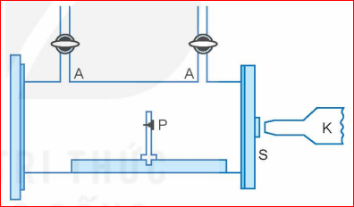
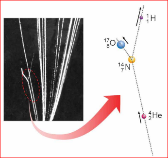
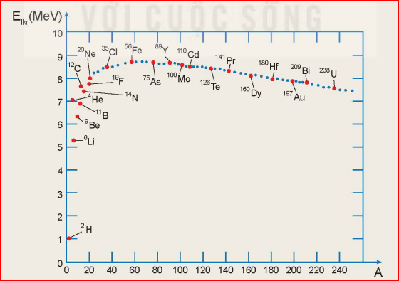

Chiếc tem thư phát hành năm 1971 có in hình Rutherford và phương trình phản ứng hạt nhân được thực hiện lần đầu tiên trên thế giới vào năm 1909. Người ta đã thực hiện thí nghiệm phát hiện phản ứng hạt nhân như thế nào? Các hạt nhân có thể biến đổi thành các hạt nhân khác không?
Thí nghiệm Rutherford:
Rutherford đã cho chùm hạt alpha \( ({}_2^4\text{He}) \), phóng ra từ nguồn phóng xạ \( {}_{84}^{210}\text{Po} \) đặt tại P, bắn phá hạt nhân \( {}_7^{14}\text{N} \) có trong không khí được dẫn theo đường nạp và hút khí A. Từ kết quả thí nghiệm, ông cho rằng có hạt nhân H trong sản phẩm.

Thí nghiệm Blackett:
Năm 1925, Patrick Blackett đã sử dụng buồng sương để chụp được dấu vết tương tác này. Kết quả giúp ông đi tới kết luận: Trong một số trường hợp, hạt He bắn phá vào hạt nhân \( {}_7^{14}\text{N} \) đã tạo ra hai hạt nhân mới đó là \( {}_8^{17}\text{O} \) và \( {}_1^1\text{H} \).

Thảo luận:
So sánh tổng số điện tích, tổng số nucleon của các hạt nhân trước và sau khi tương tác trong thí nghiệm của Blackett.
Định nghĩa: Quá trình biến đổi hạt nhân này thành hạt nhân khác là phản ứng hạt nhân.
Ví dụ phương trình:
\( {}_2^4\text{He} + {}_7^{14}\text{N} \rightarrow {}_{8}^{17}\text{O} + {}_1^1\text{H} \)
Phân loại phản ứng hạt nhân:
Câu hỏi:
Hãy trình bày sự khác nhau giữa phản ứng hạt nhân và phản ứng hóa học.
Định luật bảo toàn số nucleon (số khối A): Tổng số nucleon của các hạt trước phản ứng bằng tổng số nucleon của các hạt sau phản ứng.
Định luật bảo toàn điện tích: Tổng đại số các điện tích của các hạt trước phản ứng bằng tổng đại số các điện tích của các hạt sau phản ứng.
Thảo luận:
Nội dung 1: Viết biểu thức liên hệ giữa các số khối và điện tích cho phương trình: \( {}_{Z_1}^{A_1}\text{X}_1 + {}_{Z_2}^{A_2}\text{X}_2 \rightarrow {}_{Z_3}^{A_3}\text{X}_3 + {}_{Z_4}^{A_4}\text{X}_4 \)
Nội dung 2: Khi bắn phá \( {}_{92}^{235}\text{U} \) bằng neutron \( ({}_0^1\text{n}) \), chúng tạo thành hạt nhân X, ngay sau đó X phân rã thành \( {}_{42}^{99}\text{Mo} \), 3 hạt neutron và một hạt nhân Y. Xác định Y.
Lực tương tác giữa các nucleon trong hạt nhân là lực hút, gọi là lực hạt nhân. Lực hạt nhân có cường độ rất lớn và bán kính tác dụng rất ngắn (cỡ \( 10^{-15}\text{ m} \)). Năng lượng tối thiểu dùng để tách toàn bộ số nucleon ra khỏi hạt nhân bằng năng lượng liên kết hạt nhân \( E_{\text{lk}} \).
Năng lượng liên kết riêng:là năng lượng tính trên 1 nucleonNăng lượng liên kết riêng quyết định độ bền vững của hạt nhân. \( E_{\text{lkv}} \) càng lớn, hạt nhân càng bền.
Câu hỏi:
Vì sao để tách được các nucleon ra khỏi hạt nhân cần một năng lượng lớn?
Thảo luận:
Liệt kê đầy đủ nội dung liên quan đến đồ thị năng lượng liên kết riêng ở hình dưới.

Khối lượng của hạt nhân luôn nhỏ hơn tổng khối lượng của các nucleon tạo thành hạt nhân đó.
Công thức:
\( \Delta m = [Zm_p + (A - Z)m_n] - m_X \)
Câu hỏi:
Hãy tính độ hụt khối của hạt nhân Oxygen \( ({}_8^{16}\text{O}) \), biết khối lượng hạt nhân là \( 15,99492\text{ amu} \). (Cho \( m_p = 1,00728\text{ amu} \); \( m_n = 1,00866\text{ amu} \)).
Thuyết tương đối Einstein: Một vật có khối lượng \( m \) thì cũng có năng lượng tương ứng là \( E \) và ngược lại: \( E = mc^2 \).
Biểu thức Năng lượng liên kết: \(E_{lk}=\Delta m.c^2\)
Thảo luận:
Tìm hệ số chuyển đổi giữa các đơn vị amu và \( \text{MeV}/c^2 \).
Sự phân bố năng lượng liên kết riêng cho thấy các hạt nhân nặng có xu hướng vỡ thành các hạt nhân trung bình để đạt trạng thái bền vững hơn.
Định nghĩa: Phản ứng phân hạch là phản ứng hạt nhân trong đó một hạt nhân nặng vỡ thành hai hạt nhân nhẹ hơn.
Năm 1939, Otto Hahn làm thí nghiệm dùng neutron nhiệt bắn vào Uranium-235.
Phương trình:
\( {}_0^1\text{n} + {}_{92}^{235}\text{U} \rightarrow {}_{92}^{236}\text{U}^* \rightarrow {}_{39}^{95}\text{Y} + {}_{53}^{138}\text{I} + 3{}_0^1\text{n} \)
Đặc điểm phản ứng: Phản ứng toả ra năng lượng khoảng \( 200\text{ MeV} \).
Lưu ý: Phản ứng phân hạch phải qua trạng thái kích thích không bền vững.
Thảo luận:
Nêu đặc điểm phản ứng phân hạch của Uranium.
Các neutron sinh ra sau mỗi phân hạch có thể kích thích các hạt nhân Uranium khác tạo ra phản ứng tiếp diễn liên tục.
Câu hỏi:
1. Nêu đặc điểm của phản ứng phân hạch dây chuyền.
2. Tính năng lượng toả ra khi phân hạch hoàn toàn \( 1\text{ kg } {}_{92}^{235}\text{U} \). Biết mỗi phân hạch tỏa \( 200\text{ MeV} \).
Em có biết:
Gọi \( k \) là số neutron trung bình giải phóng sau mỗi phân hạch. Khi \( k < 1 \), phản ứng dây chuyền tắt dần; \( k = 1 \), phản ứng tự duy trì ổn định; \( k > 1 \), phản ứng bùng nổ vượt tầm kiểm soát (ứng dụng trong bom hạt nhân). Để xảy ra phản ứng dây chuyền, khối lượng chất phân hạch phải lớn hơn khối lượng tới hạn \( m_{\text{th}} \).
Định nghĩa: Phản ứng tổng hợp hạt nhân là phản ứng hạt nhân trong đó hai hay nhiều hạt nhân nhẹ tổng hợp lại thành một hạt nhân nặng hơn.
Phương trình đầu tiên trên thế giới (1927):
\( {}_1^2\text{H} + {}_1^2\text{H} \rightarrow {}_2^3\text{He} + {}_0^1\text{n} \)
Đặc điểm phản ứng nhiệt hạch: Vì các hạt nhân đều mang điện dương nên cần cung cấp động năng cực lớn (ở nhiệt độ từ \( 10^7 \) đến \( 10^8\text{ K} \)) để chúng thắng được lực đẩy tĩnh điện Coulomb và kết hợp lại.
Em có biết:
Điều kiện của phản ứng nhiệt hạch cần thỏa mãn tiêu chuẩn Lawson về mật độ hạt nhân và thời gian duy trì plasma cao độ: \( n \cdot \Delta t > 10^{14}\text{ s/cm}^3 \).
Câu hỏi:
So sánh định tính phản ứng tổng hợp hạt nhân và phản ứng phân hạch về: nhiên liệu và điều kiện xảy ra.
| Đặc điểm | Phản ứng phân hạch | Phản ứng tổng hợp |
|---|---|---|
| Nhiên liệu | Các hạt nhân rất nặng (\( \text{U}, \text{Pu} \)) | Các hạt nhân rất nhẹ (\( \text{H}, \text{D}, \text{T} \)) |
| Điều kiện | Cần neutron kích thích ban đầu | Cần nhiệt độ cực kỳ cao |
Em đã học:
Em có thể:
Câu 1 (Biết): Lực hạt nhân là lực nào dưới đây?
Câu 2 (Biết): Đại lượng nào sau đây KHÔNG được bảo toàn trong phản ứng hạt nhân?
Câu 3 (Hiểu): Phản ứng phân hạch Uranium-235 tỏa năng lượng chủ yếu dưới dạng:
Câu 4 (Hiểu): Điều kiện cần để xảy ra phản ứng nhiệt hạch là:
Câu 5 (Hiểu): Hạt nhân càng bền vững khi có:
Bài 1: Tính năng lượng tỏa ra trong phản ứng \( {}_1^2\text{H} + {}_1^3\text{H} \rightarrow {}_2^4\text{He} + {}_0^1\text{n} \). Cho khối lượng các hạt là: \( m_D = 2,0140\text{ amu} \); \( m_T = 3,0160\text{ amu} \); \( m_{He} = 4,0015\text{ amu} \); \( m_n = 1,0087\text{ amu} \).
Bài 2: Phân hạch hoàn toàn \( 1\text{ g } {}_{92}^{235}\text{U} \) tỏa ra bao nhiêu năng lượng tương ứng theo đơn vị Jun (J)? Giả sử mỗi phân hạch tỏa ra \( 200\text{ MeV} \).
Bài 3: Một lò phản ứng nhiệt hạch thử nghiệm đang cố gắng tạo ra mật độ plasma là \( 2 \times 10^{14}\text{ hạt/cm}^3 \). Tính thời gian plasma cần được duy trì tối thiểu để đạt tiêu chuẩn Lawson.